Sejarah tentang rumah adat Besemah atau rumah tatahan -Kapan rumah ini di bangun dan oleh siapa serta bapak keturunan ke berapa penjaga rumah ini sekarang Rumah ini di bangun oleh leluhur dan saya pewaris ke 6 rumah ini namanya rumah tatahan Sindang merdeke lampit 4 merdeke 2 nilai- nilai yang terkandung dalam tatahan itu dan inilah yang menjadi aturan hidup. -Waktu membangunan rumah ini kira-kira berapa lama pak ? Untuk membuat bangunan asal-muasalnya saat membuat bermacam ini itu ada waktu paling lama 4 bulan kemudian setiap satu ukiran kalau dia besar itu pakai kerbau kalau yang kecil itu pakai sapi yang kecil lagi kambing kemudian paling kecil sekali pakai ayam saat membuat ukiran tidak boleh makan daging atau hewani
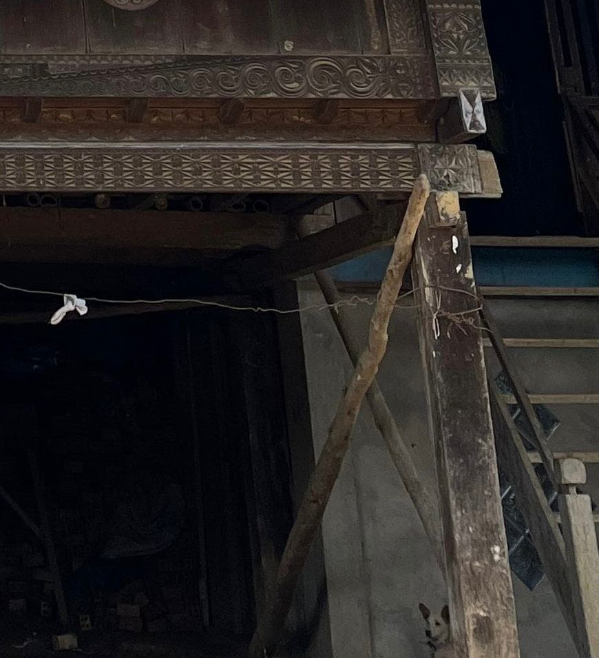
Bangunan ini di mulai dari pondasi kalau istilah sekarang ini, kalau dulu tatahan. tatahan itu terbuat dari batu nilainya ada 3 karena rumah ini sudah di ubah tiang fungsi dari ketiga batu itu cerminan dari 3 serumpun awal Melayu tiga serumpun itu di namakan sumbai Sumbai imura pangkal lurah alir atau mataangung kemudian ada tiang tiap ini jumlah nya ada 6 dulu tidak setinggi ini dulu bulat Keenam tiang ini simbol dari lampit 4 merdeke 2 siap tembok ada tiangnya rumah ini pondasi ke tiang kemudian bentuk badan bangunan ini 4 persegi panjang sama sisi karena awal 4 tadi ke empat sumbai memiliki tanggung jawab pertama dalam memelihara hukum dan adat disini adapun lukisan yang terukir itu adalah simbol dari Siapa dan di mana awak kita tercermin
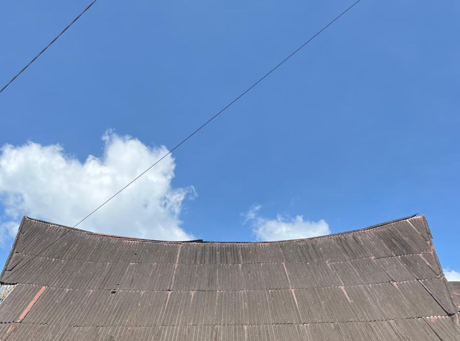
“Atap rumah adat tatahan sindang merdeke lampit 4 merdeke 2” Atap rumah bahi dulunya atap gelumpai. gelumpai itu sirap dari buluh, biasanya pakai sirap dari kayu di tutup sama ijo di katakan gelumpai karena atap ini melengkung dari layar kembang. Tanda leluhur pengembala laut di katakan suku bajau.
Pengetahuan leluhur itu sudah hebat Bumi bentuk bulat Matahari terbungkan ayek-ayek ini di ambil dari tumbang atau ombak di laut kemudian jadi awan di tarik angin di jatuhkan 4 lubang Jadi api ayek angin Di antara ke 4 ini cuman ayek yang lokasinya tidak terputus Laut jadi awan jadi ujan di serap bumi ke laut lagi nyuap lagi jadi sindang leluhur kita dulu hidupnya karena air mengalir karena ada sindang .
"bumi setapak miring" karena di dalamnya terdapat 4 elemen terciptanya alam semesta lukisan terukir ini cerminan dari 4 unsur utama alam semesta.
“langit tatahan sekembang payung “ Dan yang bawah hasil dari sindang Sindang saringan ayek adalah saringan perilaku karena di wariskan terus-menerus tradisi jati diri.
“merdeke 2 di ambil dari hebung” Karena patah tumbuh tulang berganti. Wali kota wali kota dulu memang tidak boleh sedekit pun tampak terhadap masyarakat.
Sumbai ini di lambang nya di ambil dari bunga padi simbol sejahtera.
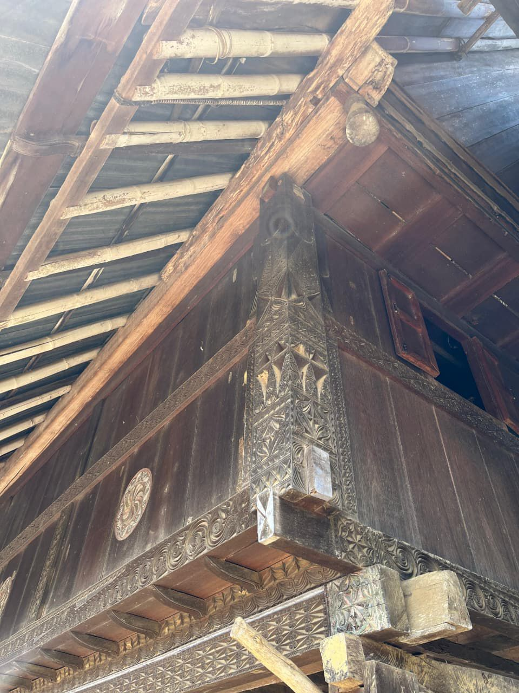
Ukiran atau lukisan terukir ini batra batra itu air laut tiang layar ada 2 di batra ada bataan kendale ada 3 bunga padi mendale lambang kehormatan
“haruna saring” Di saring oleh jantung hati (hati nurani) hasil saringan hati nurani itu di jadikan sendiang payung
Hasil dari saringan karena di wariskan terus-menerus jadilah “jati diri”
Tempat hunian atau ketetapan hidup Karena di daratan jadi balai tempat mencari ,menentukan jalan hidup selanjutnya.
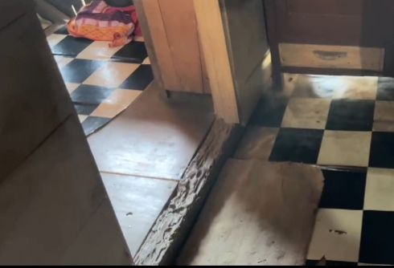
rumah bahi ada tiga dasar atas tengah bawah atas untuk jurai tue ha 6 para ketua tengah untuk peserta di buat aturan Semestara yang bawah tempat meletakkan alat
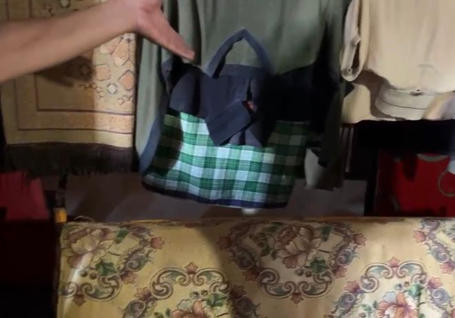
Tempat meletakkan alat karena memiliki sejarah di tempat ini Untuk meletakkan peti pangguan dan sebagainya.
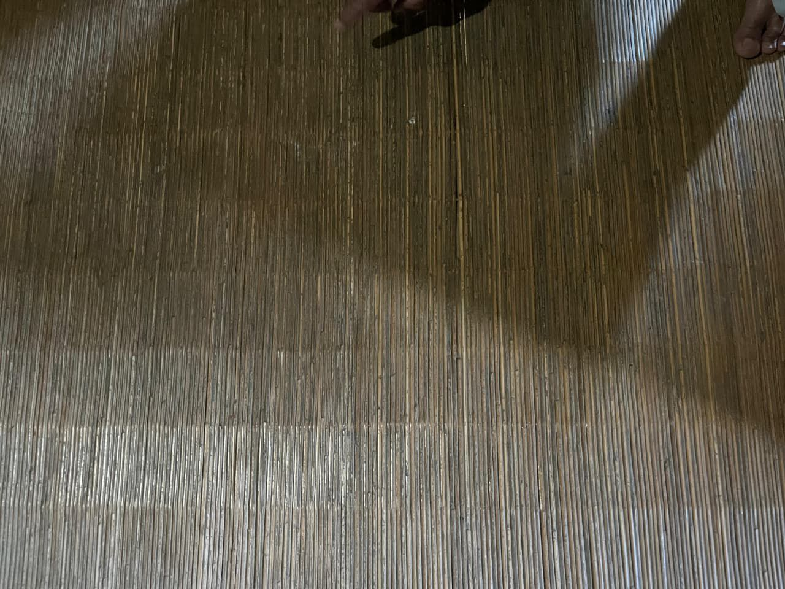
“Lampik” Lampik ini di ambil dari ui sege Di katakan sege emang susah di dapatkan tahan dari dulu tahan lama Tahan bertahun-tahun.
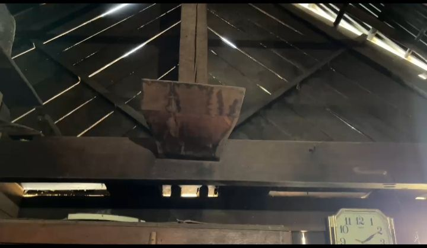
“Melayu berlayar” Melayu itu sebutan tapi ada arti Di laut kita berjaya di darat kita perkasa. Melayu ada 3 kelompok Kelompok pangkal lura base e Kelompok andaman bahase o Kelompok saman base e Mereka permulaan hidup di darat rukun dan damai.tapi satu ketika ada satu perselisihan individu antara kelompok
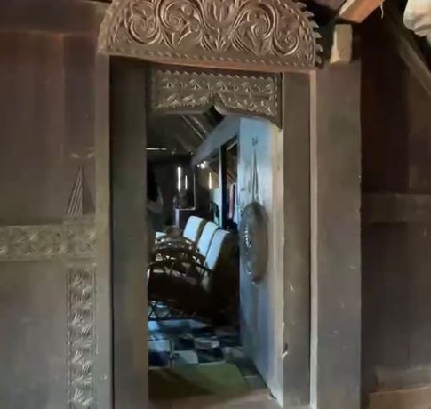
“rumah adat tatahan sindang merdeke lampit 4 merdeke 2 “ Kalau masuk harus di langkahi karena hidup harus tetap jalan tapi aturan jangan sekali-kali kita melanggar aturan saat aturan itu kolandasar saat itulah hukum akan jatuh sansi nya sementara dalam hukum adat istiadat kita seseorang atau masyarakat itu tidak boleh menundukan saat akan berhadapan.
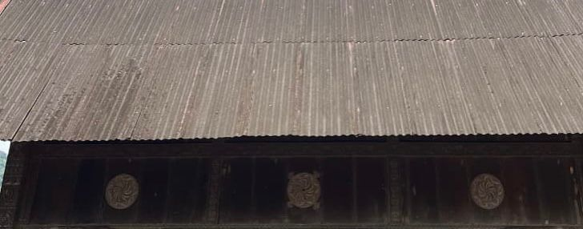
Bulat-bulat lautan Tengah mandais umbai Ukiran bawah batra Batra ini memiliki 2 tiang layar kemudian batra ini membawa 3 mandale mendala atau mendali.
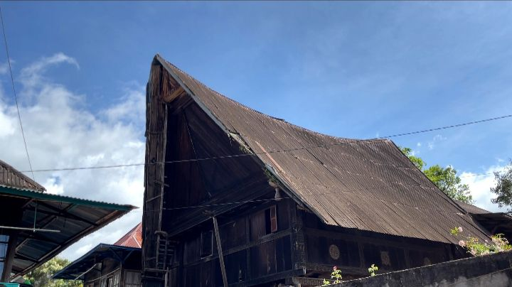
Dindingan miring Simbol dari berlayar Inilah awal dari kata melayu
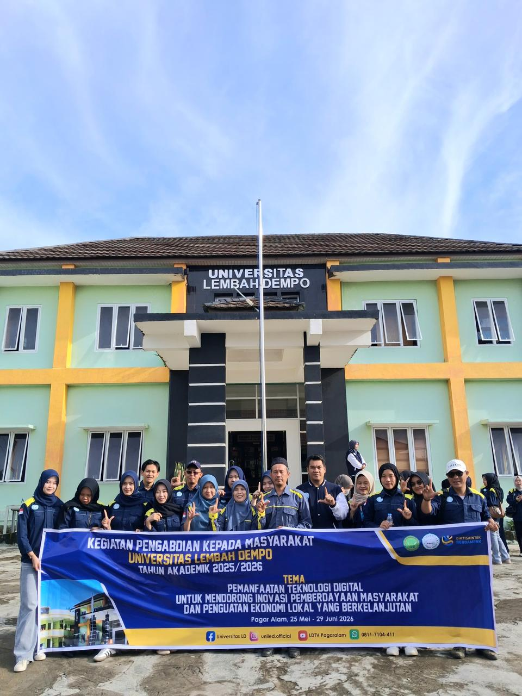
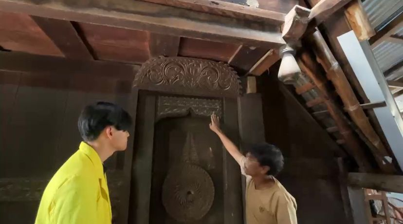
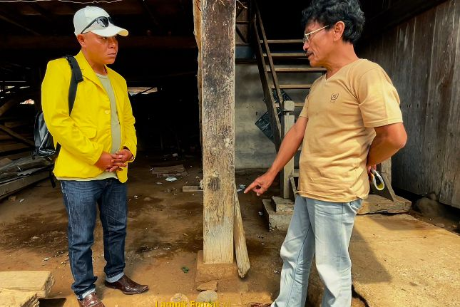
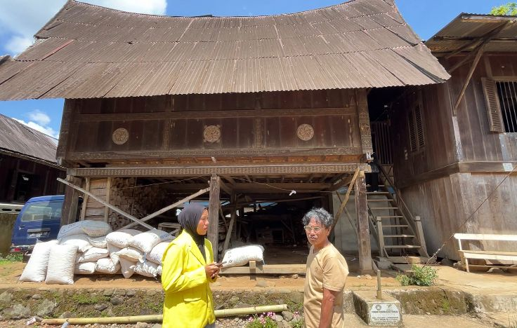
Ketua
Wakil Ketua
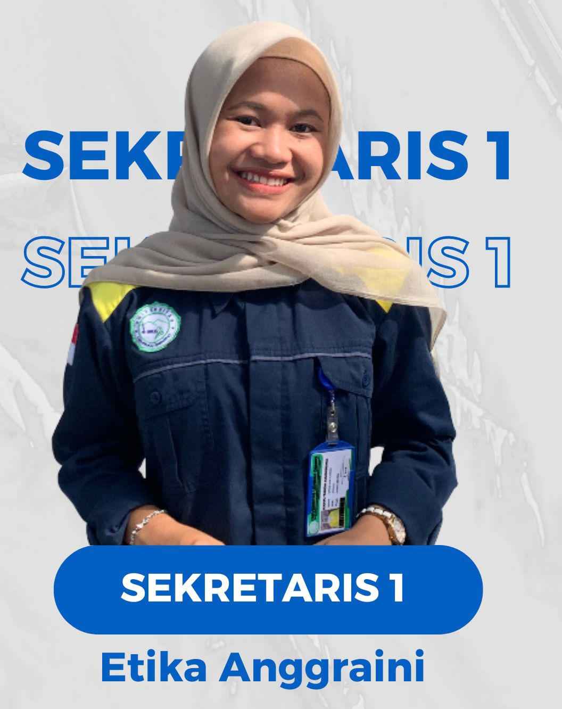
Sekretaris 1
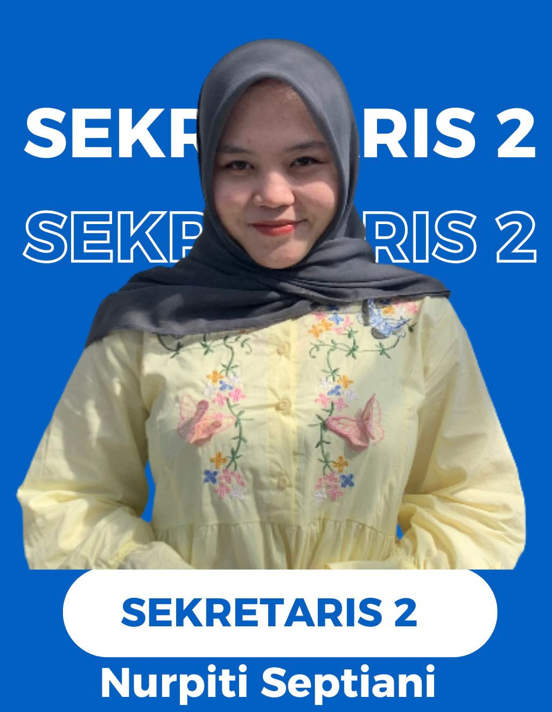
Sekretaris 2
Bendahara 1
Bendahara 2
Humas
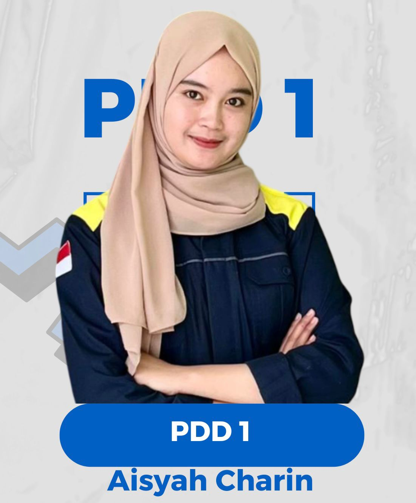
PDD 1
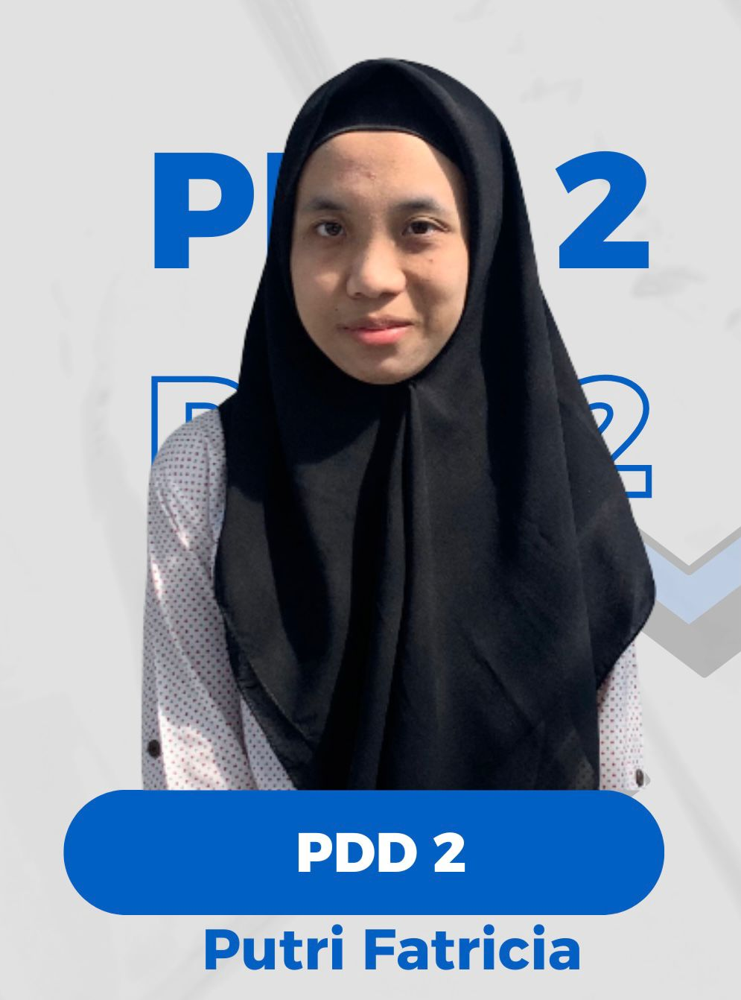
PDD 2
DPL 1
NIDN 0204038101
DPL 2
NIDN 0220018803
Ikuti kegiatan kami melalui Instagram.